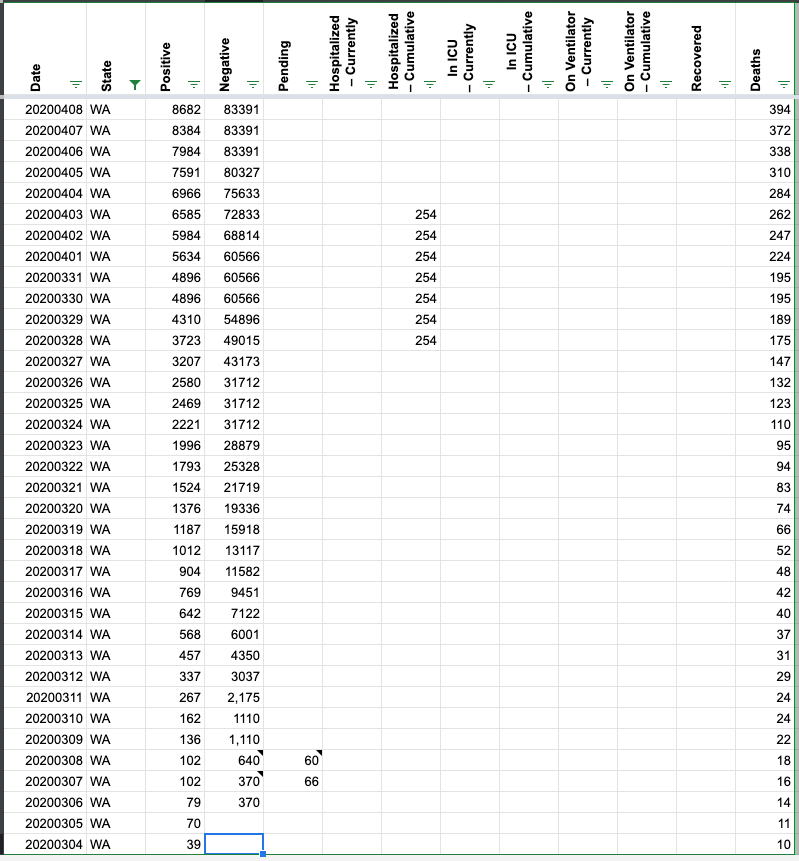
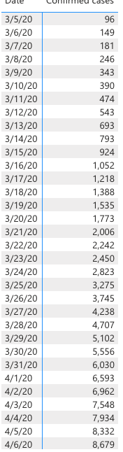
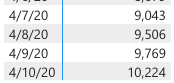
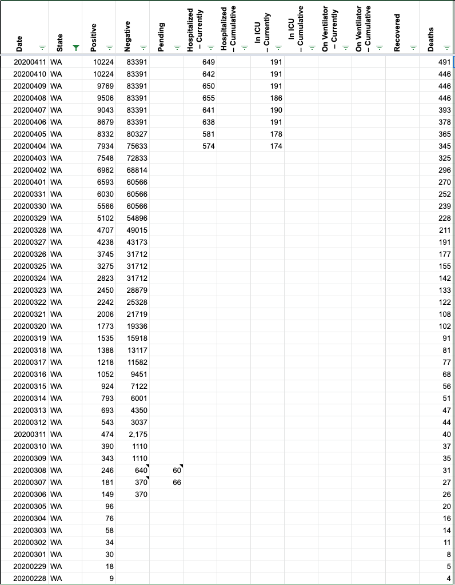

Washington State data is incorrect
Not sure if this is the right repo, but the data for WA is currently incorrect. Their system is currently having technical difficulties and covidtracking.com currently has duplicate data listed for March 30th and 31st.
hammer added the label Data quality on April 1, 2020 at 8:58 pm
careeningspace commented on April 11, 2020 at 9:56 pm
Hello,
I apologize for the delay, but I was able to clean up some of the numbers for Washington. Their negative/total tested number as reported is hard to reconcile, but I have updated the positives. One of the challenges with Washington is that they appear to be updating historical numbers over time, so it will take regular maintenance to keep in sync.
Before 
Screencap from state site* These numbers are still in flux and may change.  
After 
careeningspace closed the issue on April 11, 2020 at 9:56 pm
Note, WA state has tweeted they have updated their data: https://twitter.com/WADeptHealth/status/1245544351507165184
"Updated numbers are now available for total case counts by county for March 29, 30, and 31 at http://doh.wa.gov/coronavirus."
Does anything need to change on our end to reflect updated stats? Thanks!